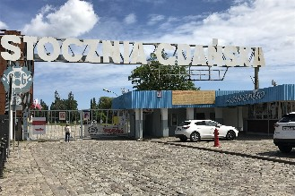
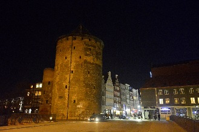

Gdańsk
Ahhh Gdańsk... É até difícil começar a falar sobre esta cidade sem dar um suspiro.Quem me conhece sabe do quanto gosto de cidades grandes, com largas avenidas, movimento intenso e arranha-céus. Embora não seja uma cidadezinha pequena de interior, Gdańsk não segue esse perfil de metrópole que tanto me agrada, mas ainda assim é uma das cidades que mais me cativaram em todas as minhas viagens.
É impossível não se encantar com toda a beleza da cidade, sua rica arquitetura e história singular de grande relevância mundial.
Gdańsk (que já se chamou Danzig quando estava sob domínio alemão) é uma cidade de cerca de 460 mil habitantes localizada na província da Pomerânia. Tem uma área de 261,96 km².
Desde a Idade Média é a maior cidade portuária da Polônia, além de ser a maior cidade do norte e 6ª maior do país. A região metropolitana da cidade inclui mais 2 cidades, Gdynia e Sopot, totalizando mais de 1 milhão de habitantes.
Foi fundada em 997 como uma cidade fortaleza, um porto de pesca e centro de comércio de âmbar e artesanato.
Em 1308 foi ocupada pelos Cavaleiros Teutônicos, que realizaram um massacre no dia 13 de Novembro daquele ano. Após uma rebelião contra os Cavaleiros Teutônicos, em 1454, a cidade se juntou novamente à Polônia.
A volta de Gdańsk ao domínio polonês sancionou o acordo de paz de Toruń em 1466.
Antes do Século XVIII era maior cidade do país, além de ser a cidade real do Reino da Polônia.
Em 1627, perto de Oliwa (atualmente um bairro de Gdańsk), os poloneses derrotaram os suecos em uma das batalhas marítimas mais importantes da história da Polônia.
Em 1793, com o enfraquecimento da Polônia devido à conflitos internos, Gdańsk acabou sendo captura pela Prússia na segunda partilha da Polônia, em 1793.
Em 10/1/1920, por conta do Tratado de Versalhes, ganhou o status de "cidade livre", sendo criado, assim, o "corredor de Danzig (nome alemão da cidade)", através do qual a Polônia teve livre acesso ao mar Báltico, entre outros direitos especiais, sendo protegida pela Liga das Nações. Tal imposição do pós-guerra foi motivo de permanente descontentamento do governo alemão, até que, em 1/9/1939 a ocupação do corredor de Gdańsk pelos alemães deu início a 2ª Guerra Mundial.
O primeiro tiro da guerra foi disparado na península de Westerplatte.
A cidade permaneceu sob ocupação alemã até 1945.
Com o fim da guerra, veio novamente a incorporação de Gdańsk ao território polonês.
Foi em Gdańsk, no Estaleiro Naval de Lenin, que nasceu, em 1980, o único sindicato independente do antigo Leste Europeu socialista, o Solidariedade, que teve papel crucial na derrubada do regime comunista na Polônia.
As atrações de Gdańsk

Westerplatte

Mercado Longo (Long Market / Długi Targ)

Museu da 2ª Guerra Mundial

Guindaste Medieval

Museu de Arqueologia

Portão Stągiewna

Parque Presidente Ronald Reagan

Basílica de Santa Maria da Assunção da Virgem Abençoada

Quartel General da Gestapo

Navio-Museu Sołdek

Monumento à Jan III Sobieski

Igreja de Santa Catarina

Monumento às Crianças Evacuadas

Basílica de São Nicolau

Museu Marítimo Nacional

Catedral Oliwa

Centro Cultural Marítimo

Tanque #121

Portão dos Negociantes
Westerplatte
Westerplatte é uma península localizada na costa do Mar Báltico, da "boca" do Vístula Morto (um dos
estuários do delta do rio Vístula), no canal portuário de Gdańsk.
Por volta de 1830 foi inaugurado na península um resort com spas, praia, parque florestal, etc. Mas sua fama se deve à Batalha de Westerplatte, que foi o primeiro enfrentamento entre as forças polonesas e alemãs durante a invasão da Polônia. Esta batalha acabou sendo o estopim da 2ª Guerra Mundial. Em outras palavras, a guerra começou neste local.
Em 14/3/1924 o Westerplatte tornou-se local oficial de desembarque de equipamentos militares e munições vindas de navio do exterior. Em 1925 o Conselho da Liga das Nações permitiu que a Polônia mantivesse 88 soldados na península. Inaugurado em 11/11/1925 o depósito manteve estes homens em um forte defensivo. Só que esse número de 88 soldados foi secretamente aumentado pelos poloneses, para um efetivo de 176 soldados e 6 oficiais em Setembro de 1939. Eles estavam armados com uma arma 75mm, 2 armas antitanque Bofor 37mm, 4 lançadores de morteiros e algumas metralhadoras de médio porte.
Não haviam fortificações de grande porte, mas várias construções reforçadas e postos de guarda equipados com armamento pesado foram escondidos nas florestas da península.
As tropas polonesas ficavam separadas da Cidade Livre de Danzig (atual Gdańsk) pelo canal do porto, com apenas um estreito istmo ligando a área à parte continental. Em caso de guerra, os defensores deveriam manter um ataque sustentado por 12 horas, até que chegassem reforços das forças principais do exército polonês.
O comandante da tropa polonesa era o major Henryk Sucharski, o oficial executivo era o capitão Franciszek Dąbrowski.
No dia 1/9/1939, apenas alguns minutos após a Luftwaffe (força aérea alemã) iniciar a invasão da Polônia soltando bombas em uma série de ataques na cidade de Wieluń com aviões Junkers Ju 87 Stukas, às 4:48 no horário local, o navio Schleswig-Holstein, que estava em uma "visita de cortesia" à Cidade Livre de Danzig, sem nenhum aviso abriu fogo contra as tropas polonesas. À isso se seguiu um ataque da unidade de Wilhelm Henningsen desde o Schleswig-Holstein e da Marinestosstruppkompanie. Entretanto, logo após cruzarem o muro de tijolos destruído pela artilharia os invasores foram emboscados pelos defensores poloneses, com ataques de armas pequenas, morteiros e metralhadoras vindos de pontos bem posicionados que os manteve no fogo cruzado.
Outros 2 ataques alemães foram repelidos neste dia, com os alemães sofrendo baixas inesperadamente altas.
Nos dias seguintes, os alemães repetidamente bombardearam a península com artilharia naval e artilharia terrestre pesada, além de bombardeios aéreos com aviões Junkers Ju 87 Stukas.
Ataques repetidos de 3500 soldados alemães foram repelidos por apenas 180 soldados poloneses por 7 dias.
A esperança era que os britânicos e franceses, que haviam ingressado na guerra em 3/9/1939 enviassem ajuda. O major Henryk Sucharski foi informado de que não seriam enviados reforços, nem dos britânicos e franceses, nem do próprio exército polonês.
Mesmo isolado, sem reforço e sem possibilidade de reabastecer os recursos, ele se manteve firme na defesa de seu posto, mantendo os alemães estacionados em Westerplatte e evitando mais ataques ao longo da costa polonesa.
Em 7 de Setembro, sem água, medicamentos, suprimentos, alimentos e munição, o major acabou se rendendo.
A bravura dos poloneses foi tamanha, que eles sofreram apenas 15 baixas e foram até saudados por seus captores alemães em reconhecimento à sua heroica resistência.
Como sinal de honra pelos soldados de Westerplatte, o comandante alemão o general Eberhardt, permitiu que o major Sucharski mantivesse consigo sua espada enquanto era mantido prisioneiro.
Esta batalha, embora estrategicamente não fosse a mais importante para a defesa da cidade, ainda representa uma fonte de imenso orgulho para muitos poloneses, que reconhecem o heroísmo de seus soldados na defesa do país contra um de seus tradicionais desafetos.
Atualmente o Westerplatte é um memorial com ruínas espalhadas de postos de defesa e bunkers.
Após a guerra, um destes postos, Posto de Guarda # 1 (Guardhouse # 1) foi convertido em museu. 2 projéteis 280mm do Schleswig-Holstein estão na entrada deste museu.
Um monumento aos defensores da costa (Pomnik Obrońców Wybrzeża) foi inaugurado em 1966.
Por volta de 1830 foi inaugurado na península um resort com spas, praia, parque florestal, etc. Mas sua fama se deve à Batalha de Westerplatte, que foi o primeiro enfrentamento entre as forças polonesas e alemãs durante a invasão da Polônia. Esta batalha acabou sendo o estopim da 2ª Guerra Mundial. Em outras palavras, a guerra começou neste local.
Em 14/3/1924 o Westerplatte tornou-se local oficial de desembarque de equipamentos militares e munições vindas de navio do exterior. Em 1925 o Conselho da Liga das Nações permitiu que a Polônia mantivesse 88 soldados na península. Inaugurado em 11/11/1925 o depósito manteve estes homens em um forte defensivo. Só que esse número de 88 soldados foi secretamente aumentado pelos poloneses, para um efetivo de 176 soldados e 6 oficiais em Setembro de 1939. Eles estavam armados com uma arma 75mm, 2 armas antitanque Bofor 37mm, 4 lançadores de morteiros e algumas metralhadoras de médio porte.
Não haviam fortificações de grande porte, mas várias construções reforçadas e postos de guarda equipados com armamento pesado foram escondidos nas florestas da península.
As tropas polonesas ficavam separadas da Cidade Livre de Danzig (atual Gdańsk) pelo canal do porto, com apenas um estreito istmo ligando a área à parte continental. Em caso de guerra, os defensores deveriam manter um ataque sustentado por 12 horas, até que chegassem reforços das forças principais do exército polonês.
O comandante da tropa polonesa era o major Henryk Sucharski, o oficial executivo era o capitão Franciszek Dąbrowski.
No dia 1/9/1939, apenas alguns minutos após a Luftwaffe (força aérea alemã) iniciar a invasão da Polônia soltando bombas em uma série de ataques na cidade de Wieluń com aviões Junkers Ju 87 Stukas, às 4:48 no horário local, o navio Schleswig-Holstein, que estava em uma "visita de cortesia" à Cidade Livre de Danzig, sem nenhum aviso abriu fogo contra as tropas polonesas. À isso se seguiu um ataque da unidade de Wilhelm Henningsen desde o Schleswig-Holstein e da Marinestosstruppkompanie. Entretanto, logo após cruzarem o muro de tijolos destruído pela artilharia os invasores foram emboscados pelos defensores poloneses, com ataques de armas pequenas, morteiros e metralhadoras vindos de pontos bem posicionados que os manteve no fogo cruzado.
Outros 2 ataques alemães foram repelidos neste dia, com os alemães sofrendo baixas inesperadamente altas.
Nos dias seguintes, os alemães repetidamente bombardearam a península com artilharia naval e artilharia terrestre pesada, além de bombardeios aéreos com aviões Junkers Ju 87 Stukas.
Ataques repetidos de 3500 soldados alemães foram repelidos por apenas 180 soldados poloneses por 7 dias.
A esperança era que os britânicos e franceses, que haviam ingressado na guerra em 3/9/1939 enviassem ajuda. O major Henryk Sucharski foi informado de que não seriam enviados reforços, nem dos britânicos e franceses, nem do próprio exército polonês.
Mesmo isolado, sem reforço e sem possibilidade de reabastecer os recursos, ele se manteve firme na defesa de seu posto, mantendo os alemães estacionados em Westerplatte e evitando mais ataques ao longo da costa polonesa.
Em 7 de Setembro, sem água, medicamentos, suprimentos, alimentos e munição, o major acabou se rendendo.
A bravura dos poloneses foi tamanha, que eles sofreram apenas 15 baixas e foram até saudados por seus captores alemães em reconhecimento à sua heroica resistência.
Como sinal de honra pelos soldados de Westerplatte, o comandante alemão o general Eberhardt, permitiu que o major Sucharski mantivesse consigo sua espada enquanto era mantido prisioneiro.
Esta batalha, embora estrategicamente não fosse a mais importante para a defesa da cidade, ainda representa uma fonte de imenso orgulho para muitos poloneses, que reconhecem o heroísmo de seus soldados na defesa do país contra um de seus tradicionais desafetos.
Atualmente o Westerplatte é um memorial com ruínas espalhadas de postos de defesa e bunkers.
Após a guerra, um destes postos, Posto de Guarda # 1 (Guardhouse # 1) foi convertido em museu. 2 projéteis 280mm do Schleswig-Holstein estão na entrada deste museu.
Um monumento aos defensores da costa (Pomnik Obrońców Wybrzeża) foi inaugurado em 1966.
Endereço: ul. Sucharskiego
Como chegar: saindo da estação de trem principal em Gdansk, pegue o ônibus 106 do lado de fora. Durante o verão a melhor opção é pegar o Water Tram #5 que para do lado de for a do Hotel Hilton na Cidade Antiga e te deixa no Westerplatte.
Como chegar: saindo da estação de trem principal em Gdansk, pegue o ônibus 106 do lado de fora. Durante o verão a melhor opção é pegar o Water Tram #5 que para do lado de for a do Hotel Hilton na Cidade Antiga e te deixa no Westerplatte.
Cemitério dos Defensores de Westerplatte (Cemetery of the Defenders of Westerplatte / Cmentarz
Żołnierzy Wojska Polskiego na Westerplatte)
Este cemitério na península de Westerplatte possui os restos mortais de 15 homens que morreram durante o
primeiro confronto da 2ª Guerra Mundial quando os nazistas atacaram a Polônia.
O oficial comandante, o major Henryk Sucharski, que passou o resto da Guerra em campos de prisioneiros dos alemães, morreu pouco depois de voltar às suas atividades militares em 1946, na Itália.
Seu corpo foi enterrado originalmente no Cemitério Militar Polonês em Casamassima, na Itália, mas em 1971 seus restos mortais foram trazidos de volta para Gdansk.
Sua urna funerária foi enterrada junto aos seus comandados, com honras militares, em 31 de Agosto de 1971, no 32° aniversário do ataque à Westerplatte.
O oficial comandante, o major Henryk Sucharski, que passou o resto da Guerra em campos de prisioneiros dos alemães, morreu pouco depois de voltar às suas atividades militares em 1946, na Itália.
Seu corpo foi enterrado originalmente no Cemitério Militar Polonês em Casamassima, na Itália, mas em 1971 seus restos mortais foram trazidos de volta para Gdansk.
Sua urna funerária foi enterrada junto aos seus comandados, com honras militares, em 31 de Agosto de 1971, no 32° aniversário do ataque à Westerplatte.

Monumento aos Defensores de Westerplatte (Monument to the Defenders of Westerplatte / Pomnik
Obrońców Wybrzeża)
Localizada no canto sudoeste da península, este monumento de 25 metros feito com 236 blocos de granito
homenageia os heróis que lutaram contra a invasão alemã na Batalha de
Westerplatte.
Obra do arquiteto Adam Haupt e do escultor Franciszek Duszenko, foi inaugurada oficialmente em 9/10/1966.
De frente ao monumento, todos os anos no dia 1° de Setembro há um evento em memória dos soldados poloneses que participaram da batalha.
Na base do monumento há uma inscrição em polonês com uma mensagem do Papa João Paulo II direcionada à juventude dada no Westerplatte em 12/6/1987, que diz: "Cada um de vocês, jovens amigos, encontram em suas vidas algum tipo de Westerplatte. Alguma dimensão de tarefas, que vocês devem realizar e completar. Algumas ordens de direitos e valores, as quais cada um deve manter e defender. Defendam-nas, por vocês e pelos outros".
Obra do arquiteto Adam Haupt e do escultor Franciszek Duszenko, foi inaugurada oficialmente em 9/10/1966.
De frente ao monumento, todos os anos no dia 1° de Setembro há um evento em memória dos soldados poloneses que participaram da batalha.
Na base do monumento há uma inscrição em polonês com uma mensagem do Papa João Paulo II direcionada à juventude dada no Westerplatte em 12/6/1987, que diz: "Cada um de vocês, jovens amigos, encontram em suas vidas algum tipo de Westerplatte. Alguma dimensão de tarefas, que vocês devem realizar e completar. Algumas ordens de direitos e valores, as quais cada um deve manter e defender. Defendam-nas, por vocês e pelos outros".

Endereço: ul. Sucharskiego
Casa de Guarda N° 1 (Guardhouse Number 1 / Wartownia Numer 1)
Pequeno museu sobre os eventos de Setembro de 1939 que fica dentro de uma antiga casa de guarda de onde a
defesa estratégica de Westerplatte foi conduzida (embora em uma localização diferente de onde estava
originalmente).
Os 2 projéteis do lado de fora foram disparados pelo navio Schleiswig-Holstein durante o ataque.
A casa de guarda é composta de alguns quartos pequenos, então ver a exibição não toma muito tempo, mas vale a pena pela exibição de objetos interessantes como equipamentos, uniformes e armas da época.
Os 2 projéteis do lado de fora foram disparados pelo navio Schleiswig-Holstein durante o ataque.
A casa de guarda é composta de alguns quartos pequenos, então ver a exibição não toma muito tempo, mas vale a pena pela exibição de objetos interessantes como equipamentos, uniformes e armas da época.

Mercado Longo (Long Market / Długi Targ)
Calçadão que é quase como uma praça nos moldes das antigas praças medievais, tão comuns na Polônia.
A praça é cercada por casas coloridas e bem ornadas.
O Długi Targ costumava ser lar dos mais ricos residentes de Gdańsk, e a praça era usada para assembleias, e também para execuções, que aconteciam na praça, em frente à Corte Artur.
A praça é cercada por casas coloridas e bem ornadas.
O Długi Targ costumava ser lar dos mais ricos residentes de Gdańsk, e a praça era usada para assembleias, e também para execuções, que aconteciam na praça, em frente à Corte Artur.

Prefeitura Principal (Main Town Hall / Ratusz Głównego Miasta)
A torre da prefeitura, com uma réplica dourada do rei Zygmunt August no seu topo, é a primeira coisa que
chamará sua atenção no praça do mercado.
Construída no final do Século XIV como sede das autoridades da cidade, abrigou também vários reis poloneses.
Foi quase que totalmente destruída durante a 2ª Guerra Mundial, mas foi reconstruída nos mínimos detalhes.
A torre possui um clarinete de 37 sinos, inaugurado na Véspera do Ano Novo de 2000.
O interior da construção, que abriga do Museu de História de Gdańsk, é exuberantemente decorado com tetos pintados, afrescos coloridos e uma mobília bastante elaborada.
Dois leões guardam o portal do Século XVIII, de onde uma escada leva à luxuosa Sala Czerwona, ou Sala Vermelha, que era usada pelo conselho municipal no verão.
Seu teto ornamentado é decorado com 25 pinturas cercando uma peça central intitulada A Glorificação da União de Gdańsk.
Quando o clima está bom, a vista do alto da torre é belíssima.
Construída no final do Século XIV como sede das autoridades da cidade, abrigou também vários reis poloneses.
Foi quase que totalmente destruída durante a 2ª Guerra Mundial, mas foi reconstruída nos mínimos detalhes.
A torre possui um clarinete de 37 sinos, inaugurado na Véspera do Ano Novo de 2000.
O interior da construção, que abriga do Museu de História de Gdańsk, é exuberantemente decorado com tetos pintados, afrescos coloridos e uma mobília bastante elaborada.
Dois leões guardam o portal do Século XVIII, de onde uma escada leva à luxuosa Sala Czerwona, ou Sala Vermelha, que era usada pelo conselho municipal no verão.
Seu teto ornamentado é decorado com 25 pinturas cercando uma peça central intitulada A Glorificação da União de Gdańsk.
Quando o clima está bom, a vista do alto da torre é belíssima.

Endereço: ul. Długa, 46/47
Horários: Quartas, Sextas e Sábados das 10:00 às 16:00, Terças das 10:00 às 13:00, Quintas das 10:00 às 18:00, Domingos das 11:00 às 16:00. Fechada aos Domingos.
Entrada: ZL 12 (adultos), ZL 6 (crianças e idosos)
Site: www.mhmg.pl
Fone: (+48) 58 573 3128
Horários: Quartas, Sextas e Sábados das 10:00 às 16:00, Terças das 10:00 às 13:00, Quintas das 10:00 às 18:00, Domingos das 11:00 às 16:00. Fechada aos Domingos.
Entrada: ZL 12 (adultos), ZL 6 (crianças e idosos)
Site: www.mhmg.pl
Fone: (+48) 58 573 3128
Museu de História de Gdansk (Gdansk History Museum / Muzeum Historyczne Miasta Gdańska)
Nas primeiras salas do museu, você passa pelo Grande Salão do Conselho e Salão Vermelho. As salas
subsequentes exibem mobília dos Séculos XVI e XVII e mais de 600 peças de prataria, que destacam a era de
artesanato em prata de Gdansk.
O andar superior do museu possui uma exibição mostrando como era a vida na cidade antes da guerra.
Daqui você pode começar a subir até o topo da torre da prefeitura que te dá uma ótima visão da cidade.
O andar superior do museu possui uma exibição mostrando como era a vida na cidade antes da guerra.
Daqui você pode começar a subir até o topo da torre da prefeitura que te dá uma ótima visão da cidade.

Endereço rua Długa 46/47
Horário: Quartas, Sextas e Sábados das 10:00 às 16:00. Terças das 10:00 às 13:00. Quintas das 10:00 às 18:00. Domingos das 11:00 às 16:00. Fechado às Segundas. Podem mudar dependendo da época do ano.
Entrada: ZL 12 (adultos), ZL 6 (crianças). Gratuita às Terças.
Site: www.mhmg.pl
E-mail: ratusz@mhmg.pl
Fone: (+48) 58 573 3128
Horário: Quartas, Sextas e Sábados das 10:00 às 16:00. Terças das 10:00 às 13:00. Quintas das 10:00 às 18:00. Domingos das 11:00 às 16:00. Fechado às Segundas. Podem mudar dependendo da época do ano.
Entrada: ZL 12 (adultos), ZL 6 (crianças). Gratuita às Terças.
Site: www.mhmg.pl
E-mail: ratusz@mhmg.pl
Fone: (+48) 58 573 3128
Fonte de Netuno (Neptune Fountain / Fontanna Neptuna)
Esta estátua de bronze do poderoso deus do mar, Netuno, foi erguida originalmente em 1549, sendo convertida
para sua atual forma de fonte em 1633.
Felizmente se salvou dos bombardeios durante a 2ª Guerra Mundial, pois foi movida e escondida junto com outros tesouros da cidade.
Foi só em 1954 que a Fonte de Netuno voltou à praça, sendo restaurada em 2011 e 2012.
Felizmente se salvou dos bombardeios durante a 2ª Guerra Mundial, pois foi movida e escondida junto com outros tesouros da cidade.
Foi só em 1954 que a Fonte de Netuno voltou à praça, sendo restaurada em 2011 e 2012.
Endereço Długi Targ
Portão Verde (Green Gate / Zielona Brama / Grünes Tor)
Este magnífico portão com 4 arcos de entrada na frente do rio Motława foi construído como um palácio para
os monarcas poloneses. Nenhum rei polonês ficou na construção, mas Lech Wałęsa tinha seu escritório aqui,
antes de se mudar para o Centro Europeu da Solidariedade.
O portão leva à Green Bridge, que corta o rio Motława e que costumava ser erguida para impedir que pessoas indesejáveis entrassem na cidade antiga.
Após uma cuidadosa restauração o portão possui agora uma estranha semelhança com a estação de trem central de Amsterdam, e abriga uma galeria de arte e a Galeria de Fotos de Gdansk.
O portão leva à Green Bridge, que corta o rio Motława e que costumava ser erguida para impedir que pessoas indesejáveis entrassem na cidade antiga.
Após uma cuidadosa restauração o portão possui agora uma estranha semelhança com a estação de trem central de Amsterdam, e abriga uma galeria de arte e a Galeria de Fotos de Gdansk.

Endereço rua Długi Targ, 24
Horários: de Terça à Domingo das 10:00 às 17:00. Última entrada às 16:15. Fechado às Segundas.
Entrada: ZL 10 (adultos), ZL 6 (crianças e idosos). Mais ZL 2 para a Gdansk Photo Gallery.
Site: www.mng.gda.pl/our-services/oddzial-zielona-brama/ e www.mng.gda.pl
Fone: +48 58 307 5912
Horários: de Terça à Domingo das 10:00 às 17:00. Última entrada às 16:15. Fechado às Segundas.
Entrada: ZL 10 (adultos), ZL 6 (crianças e idosos). Mais ZL 2 para a Gdansk Photo Gallery.
Site: www.mng.gda.pl/our-services/oddzial-zielona-brama/ e www.mng.gda.pl
Fone: +48 58 307 5912
Portão Dourado (Golden Gate / Brama Złota)
As virtudes da Paz, Liberdade, Riqueza, Fama, Piedade, Justiça e Concordância são representadas em estátuas
alegóricas adornando a balaustrada deste portão de entrada para a rua Długa.
Construído entre 1642 e 1644, assim como boa parte da cidade, foi destruído durante a 2ª Guerra Mundial, só vindo a ser restaurado em 1997.
Uma inscrição no portão diz: "Pequenos Estados crescem pela concordância, os grandes caem pelas desavenças".
Construído entre 1642 e 1644, assim como boa parte da cidade, foi destruído durante a 2ª Guerra Mundial, só vindo a ser restaurado em 1997.
Uma inscrição no portão diz: "Pequenos Estados crescem pela concordância, os grandes caem pelas desavenças".

Endereço rua Długa
Corte Artur (Arthur Court / Dwór Artusa)
Esta impressionante mansão, um símbolo do poder da cidade nos Séculos XVI e XVII, serviu como sede da
irmandade de patrícios ricos. Fundada como ponto de encontro de negociantes e dignitários, recebeu seu
nome em referência ao rei Arthur, e abrigou vários visitantes nobres.
Depois de um incêndio em 1841, ganhou uma forma mais gótica, completada com esculturas e pinturas ilustrando os méritos e os vícios dos homens.
Em seu interior, o destaque do salão principal é um fogão renascentista, o mais alto desse tipo na Europa, com 10,64m e feito com mais de 5000 azulejos individuais. Seus adornos retratam líderes, brasões e figuras alegóricas.
Depois de um incêndio em 1841, ganhou uma forma mais gótica, completada com esculturas e pinturas ilustrando os méritos e os vícios dos homens.
Em seu interior, o destaque do salão principal é um fogão renascentista, o mais alto desse tipo na Europa, com 10,64m e feito com mais de 5000 azulejos individuais. Seus adornos retratam líderes, brasões e figuras alegóricas.
Endereço: rua Długi Targ, 43/44
Horário: Quartas, Sextas e Sábados das 10:00 às 16:00. Terças das 10:00 às 13:00. Quintas das 10:00 às 18:00. Domingos das 11:00 às 16:00. Fechado às Segundas.
Entrada: ZL 10 (adultos), ZL 5 (crianças). Entrada gratuita às Terças.
Site www.mhmg.pl
Fone: (+48) 58 573 3128
Voltar à lista
Horário: Quartas, Sextas e Sábados das 10:00 às 16:00. Terças das 10:00 às 13:00. Quintas das 10:00 às 18:00. Domingos das 11:00 às 16:00. Fechado às Segundas.
Entrada: ZL 10 (adultos), ZL 5 (crianças). Entrada gratuita às Terças.
Site www.mhmg.pl
Fone: (+48) 58 573 3128
Museu da 2ª Guerra Mundial (Museum of 2nd World War / Muzeum II Wojny Światowej)
Como você já deve saber, a 2ª Guerra Mundial começou em Gdansk, com a invasão alemã e o ataque à uma base
militar polonesa na península de Westerplatte, em 1/9/1939.
Assim sendo, este museu sobre a 2ª Guerra Mundial, inaugurado em Março de 2017, está em um local com propriedade no assunto.
O museu foca em mostrar a visão polonesa da Guerra, que custou entre 55 a 60 milhões de vidas.
Como o apoio do antigo primeiro ministro Donald Tusk, nascido em Gdansk, e que depois viria a ser presidente do Conselho da União Europeia, foi aberta uma competição para a criação de um desenho para o museu.
O vencedor foi o estúdio de arquitetura Kwadrat, da cidade vizinha de Gdynia.
O terreno do museu cobre quase 2,5 acres, enquanto a construção cobre 26.000m².
O museu é dividido em 3 partes, representando o passado, o presente e o futuro.
O passado é representado pela parte subterrânea do museu, o presente pela praça ao redor da construção e o futuro, pela torre inclinada com fachada de vidro de 40,5m.
O conceito arquitetônico assume que o mal da guerra está escondido sob o solo, e a "luz" de esperança chega até ele através de uma "rachadura" que corre pela praça ao redor da construção. É esta "rachadura" que forma o eixo de composição do conceito de distribuição da exibição principal. Ela liga o interior do prédio ao mundo externo.
A menos que você tenha apenas um interesse superficial sobre a 2ª Guerra Mundial, é aconselhável dedicar bastante tempo à visita do museu, pois há muita informação para os que realmente quiserem se aprofundar no assunto.
Alguns falam em 3 horas para uma visita completa, mas para mim, ainda é pouco tempo. Dedique no mínimo 5 horas para poder ver tudo com mais calma, ler os textos explicativos das exibições que te interessarem mais, etc.
Agora, se você é um aficionado pelo assunto, você pode facilmente passar o dia inteiro no museu.
É aconselhável também pegar um guia em áudio, alugado em diversas línguas e que reconhece onde você está no museu, reproduzindo o áudio correto relativo ao que você está vendo no momento.
A exibição está dividida em 3 blocos de narrativa: A Estrada para a Guerra, Os Horrores da Guerra e A Longa Sombra da Guerra.
Tenha em mente que as exibições foram projetadas especificamente como parte de um programa educacional para crianças polonesas.
Nas primeiras exibições você começa aprendendo sobre o background que levou à guerra. No caso de Gdansk, é inquestionável sua ligação com a conclusão da Primeira Guerra Mundial e o Tratado de Versailles, que resultou na cidade sendo deixada em um limbo político, governada nem pelo recentemente recriado Estado Polonês nem pela Alemanha, que governou a cidade por 146 anos antes da divisão. Isso dita o tom de boa parte do resto da exibição inicial.
Uma cópia do documento que selou o destino da Polônia, o Pacto Ribbentrop/Molotov, está em um quadro na parede de um corredor com enormes suásticas e foices e martelos.
A exibição segue mostrando a história da guerra de diversos ângulos. Uma das partes mais marcantes do museu está no início da 2ª parte da exibição. Em Setembro de 1939, o jornalista americano Julien Bryan estava em Varsóvia quando os alemães atacaram. Ele gravou o que viu para agências de notícias americanas e sua reportagem, mostrando as pessoas tentando lidar com o inferno que estava por vir são incríveis. A foto de uma jovem ajoelhada ao lado de sua irmã morta rodou o mundo, e é realmente impactante.
Há uma exibição sobre o código Enigma, usado pelos alemães para criptografar suas mensagens, e a corrida de vários pesquisadores para decifrar os códigos usados.
As exibições em geral contam com muitos cartazes, armas, uniformes, capacetes, objetos pessoais, fotos, etc, e até 2 tanques, um Sherman M4 Firefly que foi parte da 1ª Divisão Blindada (polonesa) e um T-34 84.
Devido ao tamanho, peso e mobilidade de ambos, eles foram as primeiras peças de exibição a chegarem, e só então o museu começou a ser construído ao redor deles.
A terceira e última parte da exibição traz uma visão sobre o pós guerra.
A Europa ficou dividida, a Alemanha ficou dividida, e eventualmente até Berlim também ficou dividida.
A Polônia, palco de início da guerra, ficou destruída e completamente abandonada por seus aliados iniciais, França e Inglaterra.
Esta parte da exibição mostra como o mundo se desenvolveu de cada lado da Cortina de Ferro e como os 2 blocos se encararam por mais de 40 anos.
Museus como esse são uma experiência capaz de mudar toda a forma como você vê uma guerra.
Muitos veem uma guerra como meras estatísticas, grandes batalhas e heróis. Mas não... a maior parte da guerra não é isso. É só vendo as referências às pessoas reais, ao cidadão comum e seu sofrimento durante esse período, suas histórias humanas de sobrevivência e bravura, que se têm uma real noção do que é uma guerra. É essa a visão que realmente impacta o visitante. A 2ª Guerra não foi apenas sobre heróis que lutaram para defender seu povo, como no Levante de Varsóvia, ela é também sobre trabalho escravo, tortura, assassinatos covardes, fim das liberdades e aniquilação das pessoas e seus espíritos.
É triste, é depressivo, é chocante, é brutal, mas são os fatos. E poucos povos podem falar com tanta propriedade sobre os horrores dessa triste realidade da 2ª Guerra quanto os poloneses. Nigdy więcej wojny (No More War).
Assim sendo, este museu sobre a 2ª Guerra Mundial, inaugurado em Março de 2017, está em um local com propriedade no assunto.
O museu foca em mostrar a visão polonesa da Guerra, que custou entre 55 a 60 milhões de vidas.
Como o apoio do antigo primeiro ministro Donald Tusk, nascido em Gdansk, e que depois viria a ser presidente do Conselho da União Europeia, foi aberta uma competição para a criação de um desenho para o museu.
O vencedor foi o estúdio de arquitetura Kwadrat, da cidade vizinha de Gdynia.
O terreno do museu cobre quase 2,5 acres, enquanto a construção cobre 26.000m².
O museu é dividido em 3 partes, representando o passado, o presente e o futuro.
O passado é representado pela parte subterrânea do museu, o presente pela praça ao redor da construção e o futuro, pela torre inclinada com fachada de vidro de 40,5m.
O conceito arquitetônico assume que o mal da guerra está escondido sob o solo, e a "luz" de esperança chega até ele através de uma "rachadura" que corre pela praça ao redor da construção. É esta "rachadura" que forma o eixo de composição do conceito de distribuição da exibição principal. Ela liga o interior do prédio ao mundo externo.
A menos que você tenha apenas um interesse superficial sobre a 2ª Guerra Mundial, é aconselhável dedicar bastante tempo à visita do museu, pois há muita informação para os que realmente quiserem se aprofundar no assunto.
Alguns falam em 3 horas para uma visita completa, mas para mim, ainda é pouco tempo. Dedique no mínimo 5 horas para poder ver tudo com mais calma, ler os textos explicativos das exibições que te interessarem mais, etc.
Agora, se você é um aficionado pelo assunto, você pode facilmente passar o dia inteiro no museu.
É aconselhável também pegar um guia em áudio, alugado em diversas línguas e que reconhece onde você está no museu, reproduzindo o áudio correto relativo ao que você está vendo no momento.
A exibição está dividida em 3 blocos de narrativa: A Estrada para a Guerra, Os Horrores da Guerra e A Longa Sombra da Guerra.
Tenha em mente que as exibições foram projetadas especificamente como parte de um programa educacional para crianças polonesas.
Nas primeiras exibições você começa aprendendo sobre o background que levou à guerra. No caso de Gdansk, é inquestionável sua ligação com a conclusão da Primeira Guerra Mundial e o Tratado de Versailles, que resultou na cidade sendo deixada em um limbo político, governada nem pelo recentemente recriado Estado Polonês nem pela Alemanha, que governou a cidade por 146 anos antes da divisão. Isso dita o tom de boa parte do resto da exibição inicial.
Uma cópia do documento que selou o destino da Polônia, o Pacto Ribbentrop/Molotov, está em um quadro na parede de um corredor com enormes suásticas e foices e martelos.
A exibição segue mostrando a história da guerra de diversos ângulos. Uma das partes mais marcantes do museu está no início da 2ª parte da exibição. Em Setembro de 1939, o jornalista americano Julien Bryan estava em Varsóvia quando os alemães atacaram. Ele gravou o que viu para agências de notícias americanas e sua reportagem, mostrando as pessoas tentando lidar com o inferno que estava por vir são incríveis. A foto de uma jovem ajoelhada ao lado de sua irmã morta rodou o mundo, e é realmente impactante.
Há uma exibição sobre o código Enigma, usado pelos alemães para criptografar suas mensagens, e a corrida de vários pesquisadores para decifrar os códigos usados.
As exibições em geral contam com muitos cartazes, armas, uniformes, capacetes, objetos pessoais, fotos, etc, e até 2 tanques, um Sherman M4 Firefly que foi parte da 1ª Divisão Blindada (polonesa) e um T-34 84.
Devido ao tamanho, peso e mobilidade de ambos, eles foram as primeiras peças de exibição a chegarem, e só então o museu começou a ser construído ao redor deles.
A terceira e última parte da exibição traz uma visão sobre o pós guerra.
A Europa ficou dividida, a Alemanha ficou dividida, e eventualmente até Berlim também ficou dividida.
A Polônia, palco de início da guerra, ficou destruída e completamente abandonada por seus aliados iniciais, França e Inglaterra.
Esta parte da exibição mostra como o mundo se desenvolveu de cada lado da Cortina de Ferro e como os 2 blocos se encararam por mais de 40 anos.
Museus como esse são uma experiência capaz de mudar toda a forma como você vê uma guerra.
Muitos veem uma guerra como meras estatísticas, grandes batalhas e heróis. Mas não... a maior parte da guerra não é isso. É só vendo as referências às pessoas reais, ao cidadão comum e seu sofrimento durante esse período, suas histórias humanas de sobrevivência e bravura, que se têm uma real noção do que é uma guerra. É essa a visão que realmente impacta o visitante. A 2ª Guerra não foi apenas sobre heróis que lutaram para defender seu povo, como no Levante de Varsóvia, ela é também sobre trabalho escravo, tortura, assassinatos covardes, fim das liberdades e aniquilação das pessoas e seus espíritos.
É triste, é depressivo, é chocante, é brutal, mas são os fatos. E poucos povos podem falar com tanta propriedade sobre os horrores dessa triste realidade da 2ª Guerra quanto os poloneses. Nigdy więcej wojny (No More War).

Endereço: Pl. Władysława Bartoszewskiego, 1.
Entrada: ZL 23 (adultos), ZL 16 (crianças e idosos). Entrada gratuita às Terças. Atenção pois a entrada é limitada à um certo número de pessoas por dia, então o ideal é comprar o ingresso online ou chegar cedo.
Horário: de Terça à Domingo das 10:00 às 19:00 (última entrada às 17:00). Fechado às Segundas.
Site: www.muzeum1939.pl
Fone: (+48) 58 323 7520
Voltar à lista
Entrada: ZL 23 (adultos), ZL 16 (crianças e idosos). Entrada gratuita às Terças. Atenção pois a entrada é limitada à um certo número de pessoas por dia, então o ideal é comprar o ingresso online ou chegar cedo.
Horário: de Terça à Domingo das 10:00 às 19:00 (última entrada às 17:00). Fechado às Segundas.
Site: www.muzeum1939.pl
Fone: (+48) 58 323 7520
Guindaste Medieval (Medieval Crane / Zuraw)
O guindaste é um dos símbolos definitivos de Gdańsk e representa o pouco do que restou da época áurea do
comércio na cidade.
Citado pela primeira vez em 1367, a estrutura original foi incendiada em 1442 antes de seu desenho atual ser criado, entre 1442 e 1444.
Enquanto guindaste funcional costumava transferir cargas e alocar mastros em navios.
Por algum tempo foi o maior guindaste do mundo, mas serviu também para fins de defesa, pois servia como portão da cidade.
Tinha uma capacidade de levantar uma carga de 4 toneladas a uma altura de 11m e isso era conseguido através de 2 enormes rodas de madeira no seu centro, com um diâmetro de 6m. Estas rodas funcionavam originalmente com a força de homens caminhando dentro delas para girar o mecanismo de levantamento.
Funcionou como guindaste até o fim do Século XIX e foi 80% destruído em 1945 na Batalha de Gdańsk.
Após a Guerra foi restaurado e doado ao Museu Marítimo Polonês, que possui uma interessante exibição sobre a vida no porto entre os Séculos XVI e XVIII.
Citado pela primeira vez em 1367, a estrutura original foi incendiada em 1442 antes de seu desenho atual ser criado, entre 1442 e 1444.
Enquanto guindaste funcional costumava transferir cargas e alocar mastros em navios.
Por algum tempo foi o maior guindaste do mundo, mas serviu também para fins de defesa, pois servia como portão da cidade.
Tinha uma capacidade de levantar uma carga de 4 toneladas a uma altura de 11m e isso era conseguido através de 2 enormes rodas de madeira no seu centro, com um diâmetro de 6m. Estas rodas funcionavam originalmente com a força de homens caminhando dentro delas para girar o mecanismo de levantamento.
Funcionou como guindaste até o fim do Século XIX e foi 80% destruído em 1945 na Batalha de Gdańsk.
Após a Guerra foi restaurado e doado ao Museu Marítimo Polonês, que possui uma interessante exibição sobre a vida no porto entre os Séculos XVI e XVIII.

Endereço: rua Szeroka, 67/68
Horários: de Terça à Domingo, das 10:00 às 15:00. Fechado às Segundas. Última entrada às 14:30.
Entrada: ZL 8 (adultos) e ZL 5 (crianças e idosos). Os ingressos podem ser comprados no Centro Cultural Marítimo (Maritime Cultural Centre) ao lado.
Site: www.nmm.pl
Fone: +48 58 301 6938
Voltar à lista
Horários: de Terça à Domingo, das 10:00 às 15:00. Fechado às Segundas. Última entrada às 14:30.
Entrada: ZL 8 (adultos) e ZL 5 (crianças e idosos). Os ingressos podem ser comprados no Centro Cultural Marítimo (Maritime Cultural Centre) ao lado.
Site: www.nmm.pl
Fone: +48 58 301 6938
Grande Arsenal (Great Armoury / Wielka Zbrojownia / Zeughaus)
Construção erguida entre 1600 e 1609 na linha medieval dos muros da cidade. Um arsenal funcional até os
anos 1800, permanece até hoje como o melhor exemplo de arquitetura renascenstista na cidade.
A estrutura em forma de poço na frente foi usada como elevador para transportar pólvora e bolas de canhão de seu local de armazenamento no porão.
Como boa parte da cidade, foi severamente danificado durante a 2ª Guerra Mundial e teve de ser completamente reconstruído.
A estrutura em forma de poço na frente foi usada como elevador para transportar pólvora e bolas de canhão de seu local de armazenamento no porão.
Como boa parte da cidade, foi severamente danificado durante a 2ª Guerra Mundial e teve de ser completamente reconstruído.

Torre da Prisão e Museu da Tortura (Prison Tower and Torture Museum / Wieża Więzienna i Katownia)
Construída originalmente como parte das fortificações da cidade na segunda metade do Século XIV, o complexo
foi reconstruído por Antoni van Obberghen entre 1593 e 1604 com o menor dos 2 prédios se tornando uma
câmara de tortura e salão da corte enquanto o maior se tornou uma prisão.
Era aqui e na praça em frente que as execuções aconteciam até metade do Século XIX.
Danificada durante a 2ª Guerra Mundial, foi extensivamente renovada e agora abriga o Museu do Âmbar e o Museu da Tortura. Há também uma plataforma de observação na torre, aberta nos meses de verão.
Era aqui e na praça em frente que as execuções aconteciam até metade do Século XIX.
Danificada durante a 2ª Guerra Mundial, foi extensivamente renovada e agora abriga o Museu do Âmbar e o Museu da Tortura. Há também uma plataforma de observação na torre, aberta nos meses de verão.

Endereço: Targ Węglowy, 26.
Horário: Quartas, Sextas e Sábados das 10:00 às 16:00, Terças das 10:00 às 13:00, Quintas das 10:00 às 18:00, Domingos das 11:00 às 16:00. Fechado às Segundas.
Entrada: ZL 12 (adultos) e ZL 6 (crianças e adultos). O ticket dá direito à visitar também o Museu do Âmbar. Entrada gratuita às Terças.
Voltar à lista
Horário: Quartas, Sextas e Sábados das 10:00 às 16:00, Terças das 10:00 às 13:00, Quintas das 10:00 às 18:00, Domingos das 11:00 às 16:00. Fechado às Segundas.
Entrada: ZL 12 (adultos) e ZL 6 (crianças e adultos). O ticket dá direito à visitar também o Museu do Âmbar. Entrada gratuita às Terças.
Museu do Âmbar (Muzeum Bursztynu. Odział Muzeum Historycznego Miasta Gdańska)
Alojada na construção prisional medieval, a exibição deste museu foca extensivamente na história do âmbar
báltico.
A incrível coleção de inclusões (quando insetos ou plantas ficam presos dentro da âmbar) é intrigante, e as várias criações em âmbar, de tinteiros à colheres, e até uma impressionante guitarra Fender Stratocaster, mostram a diversidade de usos do material.
Uma grande sala aberta no alto da construção abriga um impressionante conjunto de joalheria moderna em âmbar.
A incrível coleção de inclusões (quando insetos ou plantas ficam presos dentro da âmbar) é intrigante, e as várias criações em âmbar, de tinteiros à colheres, e até uma impressionante guitarra Fender Stratocaster, mostram a diversidade de usos do material.
Uma grande sala aberta no alto da construção abriga um impressionante conjunto de joalheria moderna em âmbar.

Endereço: Targ Węglowy, 26.
Horário: das 10:00 às 13:00 às Terças, das 10:00 às 16:00 às Quartas, Sextas e Sábados, das 10:00 às 18:00 às Quintas e das 11:00 às 16:00 aos Domingos. Fechado às Segundas.
Entrada: ZL 12 (adultos) e ZL 6 (crianças e idosos). O ticket dá direito à visitar também a Torre da Prisão (Prison Tower). Entrada gratuita às Terças.
Site: www.mhmg.pl
Fone: +48 58 573 3128
Voltar à lista
Horário: das 10:00 às 13:00 às Terças, das 10:00 às 16:00 às Quartas, Sextas e Sábados, das 10:00 às 18:00 às Quintas e das 11:00 às 16:00 aos Domingos. Fechado às Segundas.
Entrada: ZL 12 (adultos) e ZL 6 (crianças e idosos). O ticket dá direito à visitar também a Torre da Prisão (Prison Tower). Entrada gratuita às Terças.
Site: www.mhmg.pl
Fone: +48 58 573 3128
Grande Moinho (Great Mill / Wielki Mlyn)
Construído por Cavaleiros Teutônicos em 1350, esta construção com seu destacado teto inclinado é a maior
construção civil de Gdańsk.
Até 1356, quando o canal Radunia foi construído, o moinho era movido por escravos girando 18 enormes rodas.
Era a maior unidade industrial da Europa durante a Idade Média e funcionou até o fim da 2ª Guerra Mundial.
Desde então o moinho serviu para diversos fins, como um PEWEX (uma loja do período comunista onde eram vendidos itens que não estavam disponíveis nas lojas polonesas normais, mas apenas com moeda estrangeira) e até 2016 como um shopping center.
Atualmente está fechado ao público.
Até 1356, quando o canal Radunia foi construído, o moinho era movido por escravos girando 18 enormes rodas.
Era a maior unidade industrial da Europa durante a Idade Média e funcionou até o fim da 2ª Guerra Mundial.
Desde então o moinho serviu para diversos fins, como um PEWEX (uma loja do período comunista onde eram vendidos itens que não estavam disponíveis nas lojas polonesas normais, mas apenas com moeda estrangeira) e até 2016 como um shopping center.
Atualmente está fechado ao público.

Endereço: ul. Wielkie Młyny, 16.
Voltar à lista
Praça Solidarnośc (Plac Solidarnośc)
Praça onde se reuniam os o manifestante do Solidarnośc, que protestavam contra o regime comunista polonês.
Endereço: NSZZ Solidarność, 80-863
Monumento aos Trabalhadores de Estaleiros de 1970 (Monument to the Fallen Shipyard Workers of
1970 / Pomnik Poległych Stoczniowców 1970)
Do lado de fora do famoso portão n° 2 do estaleiro de Gdansk, o monumento foi inaugurado em 1980 para
celebrar os eventos de 1970, quando 45 pessoas morreram durante protestos contra o regime comunista.
Junto com exigências salariais e o direito de criarem sindicatos livres, o direito de erguer esse memorial foi uma das principais reivindicações do Solidarnośc.
A escultura de 42m e 139 toneladas de ferro fica no local onde as primeiras 3 vítimas dos protestos de 1970 foram mortas.
Há 3 cruzes representando essas vítimas, e as cruzes em si significando o sofrimento e sacrifício de todos os manifestantes. No alto delas você vê âncoras significando a profissão dos homens e na base a imagem de seus companheiros em luta.
O líder do Solidarnośc, Lech Walesa, se referiu à essa enorme estrutura de ferro como "um arpão atravessando o corpo de uma baleia. Não importa o quanto a baleia lute, ela nunca vai se livrar disso".
O monumento é marcado por uma inscrição de Czesław Miłosz: "Vocês que machucaram um homem simples, o ridicularizando com sua risada, vocês o matam, alguém vai nascer e seus feitos e palavras serão escritos".
A estátua é o centro do que é conhecido agora como a Solidarity Square, e ao seu redor há várias placas e memoriais dedicadas às vítimas do totalitarismo.
Junto com exigências salariais e o direito de criarem sindicatos livres, o direito de erguer esse memorial foi uma das principais reivindicações do Solidarnośc.
A escultura de 42m e 139 toneladas de ferro fica no local onde as primeiras 3 vítimas dos protestos de 1970 foram mortas.
Há 3 cruzes representando essas vítimas, e as cruzes em si significando o sofrimento e sacrifício de todos os manifestantes. No alto delas você vê âncoras significando a profissão dos homens e na base a imagem de seus companheiros em luta.
O líder do Solidarnośc, Lech Walesa, se referiu à essa enorme estrutura de ferro como "um arpão atravessando o corpo de uma baleia. Não importa o quanto a baleia lute, ela nunca vai se livrar disso".
O monumento é marcado por uma inscrição de Czesław Miłosz: "Vocês que machucaram um homem simples, o ridicularizando com sua risada, vocês o matam, alguém vai nascer e seus feitos e palavras serão escritos".
A estátua é o centro do que é conhecido agora como a Solidarity Square, e ao seu redor há várias placas e memoriais dedicadas às vítimas do totalitarismo.
Endereço: Pl. Solidarności.
Portão Histórico # 2 do Estaleiro de Gdansk (Historical Gate #2 of the Gdansk Shipyard)
O Portão Número 2 do Estaleiro de Gdansk é onde Lech Walesa anunciou à multidão presente o acordo feito
com o regime comunista em 1980.
A imagem do portão decorado com flores e imagens do Papa João Paulo II é uma das mais marcantes daquela era e o portão foi listado como monumento histórico desde então.
Ainda hoje se veem flores deixadas no local junto de fotos do antigo Papa.
O portão foi cena de confrontos em 2012, quando o nome Estaleiro Lenin foi recolocado na entrada como parte da produção do filme Walesa, quando manifestantes o cobriram com tinta vermelha.
A imagem do portão decorado com flores e imagens do Papa João Paulo II é uma das mais marcantes daquela era e o portão foi listado como monumento histórico desde então.
Ainda hoje se veem flores deixadas no local junto de fotos do antigo Papa.
O portão foi cena de confrontos em 2012, quando o nome Estaleiro Lenin foi recolocado na entrada como parte da produção do filme Walesa, quando manifestantes o cobriram com tinta vermelha.

Local: rua Doki, 1.
Voltar à lista
Museu de Arqueologia (Archeology Museum / Muzeum Archeologiczne)
Pode parecer estranho encontrar uma grande exibição arqueológica do Sudão no coração de Gdansk, réplicas de
cabanas tribais e tudo isso, mas você encontra isso aqui. Há também exibições sobre a história da região de
Gdansk, com esqueletos exumados, uma canoa antiga e várias jóias interessantes.
Ainda mais interessante que as armas da Era do Gelo, desenhos da Idade da Pedra e exibições de âmbar, são os modelos da cidade no passado e os entulhos coletados depois de Gdansk ser despedaçada na 2ª Guerra Mundial.
Ainda mais interessante que as armas da Era do Gelo, desenhos da Idade da Pedra e exibições de âmbar, são os modelos da cidade no passado e os entulhos coletados depois de Gdansk ser despedaçada na 2ª Guerra Mundial.
Endereço: Mariacka, 25/26
Site www.archeologia.pl
Fone: +48 58 322 2100 Horário: das 8:00 às 16:00 às Terças, Quintas e Sextas, das 9:00 às 17:00 às Quartas, das 10:00 às 16:00 aos finais de semana. Fechado às Segundas.
Entrada: ZL 8 (adultos), ZL 6 (crianças e adultos). Para a torre de observação, a entrada custa ZL 5. A tour guiada custa ZL 60.
Voltar à lista
Site www.archeologia.pl
Fone: +48 58 322 2100 Horário: das 8:00 às 16:00 às Terças, Quintas e Sextas, das 9:00 às 17:00 às Quartas, das 10:00 às 16:00 aos finais de semana. Fechado às Segundas.
Entrada: ZL 8 (adultos), ZL 6 (crianças e adultos). Para a torre de observação, a entrada custa ZL 5. A tour guiada custa ZL 60.
Portão Stągiewna (Milk Churn Gate / Brama Stągiewna / Milchkannentor)
Às margens do rio Motława encontra-se esta imponente estrutura construída entre 1517 e 1519 para guardar
o acesso às construções dos celeiros em Spichlerze.
A construção foi retocada no Século XVII, quando recebeu alguns detalhes renascentistas.
A construção foi retocada no Século XVII, quando recebeu alguns detalhes renascentistas.

Endereço: rua Stągiewna.
Voltar à lista
Museu de Copérnico (Copernicus Museum / Muzeum Kopernika)
Instalado no antigo Palácio dos Bispos de Warmia no lado leste do complexo, foi construído originalmente
no Século XIV.
Os restos da construção do Século 18, severamente danificada por um incêndio em 1945 foram restaurados apenas entre os anos de 1965 e 1970, para servir como um museu.
A exibição permanente é dedicada ao trabalho de Copérnico, mas você também encontra exibições de cartografia da área local (interessante notar como a topografia da área mudou ao longo dos séculos) e iconografias de cidades.
O orgulho do museu é uma cópia de 1948 da pintura de 1873 de Jan Matejko retratando o astrônomo Copérnico.
Apesar de ficar na cidade de Frombork, há 95km de Gdansk, pode ser acessado como uma day trip, o que vale a pena se você for um entusiasta da astronomia.
Os restos da construção do Século 18, severamente danificada por um incêndio em 1945 foram restaurados apenas entre os anos de 1965 e 1970, para servir como um museu.
A exibição permanente é dedicada ao trabalho de Copérnico, mas você também encontra exibições de cartografia da área local (interessante notar como a topografia da área mudou ao longo dos séculos) e iconografias de cidades.
O orgulho do museu é uma cópia de 1948 da pintura de 1873 de Jan Matejko retratando o astrônomo Copérnico.
Apesar de ficar na cidade de Frombork, há 95km de Gdansk, pode ser acessado como uma day trip, o que vale a pena se você for um entusiasta da astronomia.
Endereço: ul. Katedralna, 8, Frombork.
Horário: de Terça à Domingo, das 09:00 às 16:00. Fechado às Segundas. Última entrada 30 minutos antes de fechar.
Entrada: ZL 6 (adultos), ZL 4 (crianças e idosos). Site: www.frombork.art.pl
Fone: (+48) 55 244 0075
Voltar à lista
Horário: de Terça à Domingo, das 09:00 às 16:00. Fechado às Segundas. Última entrada 30 minutos antes de fechar.
Entrada: ZL 6 (adultos), ZL 4 (crianças e idosos). Site: www.frombork.art.pl
Fone: (+48) 55 244 0075
Parque Presidente Ronald Reagan (Park Prezydenta Ronalda Reagana / President Ronald Reagan Park)
Maior parque da região metropolitana da cidade de Gdansk, localizado perto da praia e com mais de 200
hectares de mata, lagos e caminhos.
Você encontrará caminhos de bicicletas bem mantidos, um parque de skate, campos para esportes e um enorme playground para crianças, além da estátua dedicada ao presidente americano Ronald Reagan e ao papa João Paulo II.
Você encontrará caminhos de bicicletas bem mantidos, um parque de skate, campos para esportes e um enorme playground para crianças, além da estátua dedicada ao presidente americano Ronald Reagan e ao papa João Paulo II.

Endereço: rua Jagiellońska, 26 / rua Piastowska. Fica em direção à fronteira de
Gdansk com Sopot, e pode ser alcançado com os bondes n° 2, 6 ou 8 ou desde a estação de trem principal de
Gdansk.
Voltar à lista
Basílica de Santa Maria da Assunção da Virgem Abençoada (Bazylika Mariacka Wniebowzięcia Najświętszej Maryi Panny
w Gdańsku / St. Mary’s of Assumption of the Blessed Virgin Basilica)
Local de culto mais visível da cidade, acredita-se que seja a maior igreja de tijolos do mundo.
O vão interior suporta 37 janelas, 300 lápides e 31 capelas. Pode receber até 25.000 pessoas, o que foi bastante útil durante o período de lei marcial entre 1981 e 1983 quando membros do Movimento Solidariedade buscaram refúgio no local.
A igreja pode ser acessada através de 7 portões com nomes estranhos como Porta do Criador de Bolsas.
A igreja foi severamente danificada durante a 2ª Guerra Mundial.
Destaque para seu enorme relógio astronômico datando de 1464. Seus complexos visores mostram a hora, a data, as fases da Lua, a posição da Lua e a posição do Sol aos signos do Zodíaco, e o calendário dos santos. Adão e Eva batem o sino de hora em hora.
A torre de 78m, que tem 405 degraus até seu todo, tem uma plataforma de observação que oferece belas vistas da cidade.
O vão interior suporta 37 janelas, 300 lápides e 31 capelas. Pode receber até 25.000 pessoas, o que foi bastante útil durante o período de lei marcial entre 1981 e 1983 quando membros do Movimento Solidariedade buscaram refúgio no local.
A igreja pode ser acessada através de 7 portões com nomes estranhos como Porta do Criador de Bolsas.
A igreja foi severamente danificada durante a 2ª Guerra Mundial.
Destaque para seu enorme relógio astronômico datando de 1464. Seus complexos visores mostram a hora, a data, as fases da Lua, a posição da Lua e a posição do Sol aos signos do Zodíaco, e o calendário dos santos. Adão e Eva batem o sino de hora em hora.
A torre de 78m, que tem 405 degraus até seu todo, tem uma plataforma de observação que oferece belas vistas da cidade.

Endereço: rua Podkramarska, 5
Site: www.bazylikamariacka.pl
Fone: +48 58 301 3982 Horário: das 8:30 às 17:30. Plataforma de observação das 10:00 às 15:30, apenas nos finais de semana e sujeitas à condições climáticas.
Entrada: ZL 4 (adultos) ou ZL 2 (crianças e adultos). Para a torre, é ZL 8 (adultos) e ZL 4 (crianças e idosos).
Voltar à lista
Site: www.bazylikamariacka.pl
Fone: +48 58 301 3982 Horário: das 8:30 às 17:30. Plataforma de observação das 10:00 às 15:30, apenas nos finais de semana e sujeitas à condições climáticas.
Entrada: ZL 4 (adultos) ou ZL 2 (crianças e adultos). Para a torre, é ZL 8 (adultos) e ZL 4 (crianças e idosos).
Museu dos Correios Poloneses (Polish Post Office Museum / Muzeum Poczty Polskiej)
Durante a era da Cidade Livre, o Estado polonês era representado por várias instituições públicas como
as Ferrovias Polonesas e o Serviço Postal Polonês. Nesta sede dos correios poloneses, acredita-se que a
construção não tinha apenas este fim, e sim que também era usada como centro da inteligência do governo
polonês na área desmilitarizada.
Bastante danificada durante ataques alemães para derrotar os "funcionários dos correios" poloneses, ficou quase que completamente destruída ao fim da guerra.
Reconstruída entre 1949 e 1951, a construção ainda é um posto de correio ativo, e abriga um pequeno museu dedicado aos eventos de 1/9/1939, além de uma exibição da história postal local do Século XVIII até o início da 2ª Guerra Mundial.
Bastante danificada durante ataques alemães para derrotar os "funcionários dos correios" poloneses, ficou quase que completamente destruída ao fim da guerra.
Reconstruída entre 1949 e 1951, a construção ainda é um posto de correio ativo, e abriga um pequeno museu dedicado aos eventos de 1/9/1939, além de uma exibição da história postal local do Século XVIII até o início da 2ª Guerra Mundial.

Endereço: ul. Obrońców Poczty Polskiej, 1-2
Fone: (+48) 58 573 3128 Site: www.mhmg.pl
Horário: das 10:00 às 16:00 às Quartas, Sextas e Sábados, das 10:00 às 13:00 às Terças, das 10:00 às 18:00 às Quintas e das 11:00 às 16:00 aos Domingos. Fechado às Segundas.
Entrada: ZL 8 (adultos) e ZL 4 (crianças e idosos). Entrada gratuita às Terças.
Fone: (+48) 58 573 3128 Site: www.mhmg.pl
Horário: das 10:00 às 16:00 às Quartas, Sextas e Sábados, das 10:00 às 13:00 às Terças, das 10:00 às 18:00 às Quintas e das 11:00 às 16:00 aos Domingos. Fechado às Segundas.
Entrada: ZL 8 (adultos) e ZL 4 (crianças e idosos). Entrada gratuita às Terças.
Monumento aos Defensores do Posto do Correio Polonês (Monument to the Defenders of the Polish
Post Office / Pomnik Obrońców Poczty Polskiej)
Comissionada em 1979 pelo Ministério das Comunicações Polonês e do Conselho para a Proteção de
Monumentos de Batalha e Martírio, e inaugurada em 1/9/1979, nas celebrações dos 40 anos do início da
2ª Guerra Mundial, esta estátua, chamada de Monumento aos Defensores do Posto do Correio Polonês, foi
desenhado pelo escultor de Cracóvia Wincenty Kućma.
É um belo exemplo de arte pública da era comunista e um justo tributo aos heróis que travaram uma batalha tão heroica.
É um belo exemplo de arte pública da era comunista e um justo tributo aos heróis que travaram uma batalha tão heroica.

Endereço: ul. Obrońców Poczty Polskiej
Voltar à lista
Capela Real (Royal Chapel / Kaplica Krolewska)
Capela muito bonita, mas que muitas vezes passa despercebida por ser ofuscada pela grande
Igreja de Santa Maria que fica logo atrás dela.
Essa pequena beleza barroca foi construída para a minoria católica da cidade em 1681.
Essa pequena beleza barroca foi construída para a minoria católica da cidade em 1681.
Endereço: rua Świętego Ducha, 58.
Horário: abre apenas durante as missas, que acontecem às 11:00.
Site: www.bazylikamariacka.gdansk.pl
Fone: +48 58 301 3982
Voltar à lista
Horário: abre apenas durante as missas, que acontecem às 11:00.
Site: www.bazylikamariacka.gdansk.pl
Fone: +48 58 301 3982
Monumento à Daniel Fahrenheit (Daniel Fahrenheit Monument / Kolumna Meteorologiczna Fahrenheita)
Daniel Fahrenheit nasceu há apenas algumas quadras dessa recriação de uma versão do Século XVIII de
termômetro e barômetro de mercúrio no vidro. Este modelo, baseou-se em um original do ano de 1752.
Endereço: ul. Mieszczańska
Voltar à lista
Quarte General da Gestapo (Gestapo HQ)
Atualmente ocupado pelo Serviço de Segurança Interna, tem uma história bem mais assustadora.
Foi nesse local que a Gestapo manteve seu quartel general en Danzig (nome alemão de Gdansk), e sobre a entrada principal ainda é possível perceber as letras disfarçadas com concreto, que dizem: "Polizei Prasidium".
Foi nesse local que a Gestapo manteve seu quartel general en Danzig (nome alemão de Gdansk), e sobre a entrada principal ainda é possível perceber as letras disfarçadas com concreto, que dizem: "Polizei Prasidium".
Endereço: ul. Okopowa, 9.
Voltar à lista
Primeiro navio a vapor construído na Gdańsk polonesa depois de 1945 no que veio a se tornar o
Estaleiro Lenin, o Sołdek acabou virando um museu.
Inaugurado em 1948, este navio foi um minerador de minérios antes de se aposentar e virar um museu.
Inaugurado em 1948, este navio foi um minerador de minérios antes de se aposentar e virar um museu.
Endereço: rua Ołowianka 9-13
Entrada: ZL 8 (adultos), ZL 5 (crianças e idosos).
Site: www.nmm.pl/soldek
Fone: +48 58 301 8611
Voltar à lista
Entrada: ZL 8 (adultos), ZL 5 (crianças e idosos).
Site: www.nmm.pl/soldek
Fone: +48 58 301 8611
Monumento à Jan III Sobieski (Jan III Sobieski Monument / Pomnik Jana III Sobieskiego)
Uma grande estátua de bronze construída em 1898 em memória do rei polonês que reinou durante o Século
XVII e é famoso por ter derrotado os otomanos durante o Cerco de Viena, salvando assim a Europa das hordas
otomanas.
Exibido originalmente em Lviv, o monumento foi transferido para Varsóvia em 1950 antes de ser finalmente transferido para Gdansk em 1965.
Durante a lei marcial o monumento se tornou o local de início de várias manifestações e marchas.
Exibido originalmente em Lviv, o monumento foi transferido para Varsóvia em 1950 antes de ser finalmente transferido para Gdansk em 1965.
Durante a lei marcial o monumento se tornou o local de início de várias manifestações e marchas.

Endereço: Targ Drzewny.
Voltar à lista
Igreja de Santa Catarina (St. Catherine's Church / Kościół Św. Katarzyny)
Esta igreja de tijolos do Século XIV, antiga paróquia da Cidade Antiga e onde Jan Heweliusz foi
administrador da igreja, é também seu local de sepultamento.
Você encontra a tomba dele atrás do altar junto à um epitáfio feito por seu neto a aproximadamente 100 anos após sua morte.
Depois de um incêndio em 2006, que resultou no colapso do teto, os trabalhos de restauração na igreja levaram anos.
Um dos destaques da igreja é sua torre barroca de 76m com um carrilhão com 49 sinos, que são badalados de hora em hora desde o aniversário de 50 anos do início da 2ª Guerra Mundial.
A torre contém um pequeno museu dedicado à relógios de torres mas só é aberto ao público no verão.
Você encontra a tomba dele atrás do altar junto à um epitáfio feito por seu neto a aproximadamente 100 anos após sua morte.
Depois de um incêndio em 2006, que resultou no colapso do teto, os trabalhos de restauração na igreja levaram anos.
Um dos destaques da igreja é sua torre barroca de 76m com um carrilhão com 49 sinos, que são badalados de hora em hora desde o aniversário de 50 anos do início da 2ª Guerra Mundial.
A torre contém um pequeno museu dedicado à relógios de torres mas só é aberto ao público no verão.

Endereço: rua Profesorska, 3
Horário: diariamente das 10:00 às 19:00.
Site: www.gdansk.karmelici.pl Fone: +48 58 301 1595 / 58 301 1595
Voltar à lista
Horário: diariamente das 10:00 às 19:00.
Site: www.gdansk.karmelici.pl Fone: +48 58 301 1595 / 58 301 1595
Monumento às Crianças Evacuadas (Monument to the Evacuated Children / Pomnik Kindertransportu)
Durante 1938 e 1939 estima-se que a vida de 10.000 crianças judias foram salvas graças à salvamentos
organizados que viriam a ser conhecidos como Kindertransports.
Estas evacuações de crianças da Polônia, República Tcheca, Alemanha, Áustria e da Cidade Livre de Danzig (Gdansk) para o Reino Unido viu crianças sendo levadas de trem, ônibus e ferry para longe dos nazistas e para novas famílias na Grã Bretanha.
Quatro kindertransports conseguiram sair de Gdansk na primavera e verão de 1939 levando um total de 124 crianças para a segurança.
O escultor Frank Meisler foi uma delas, e em 6/5/2009 seu memorial à esse êxodo foi inaugurado do lado de fora da estação de trem Gdańsk Główny.
Estas evacuações de crianças da Polônia, República Tcheca, Alemanha, Áustria e da Cidade Livre de Danzig (Gdansk) para o Reino Unido viu crianças sendo levadas de trem, ônibus e ferry para longe dos nazistas e para novas famílias na Grã Bretanha.
Quatro kindertransports conseguiram sair de Gdansk na primavera e verão de 1939 levando um total de 124 crianças para a segurança.
O escultor Frank Meisler foi uma delas, e em 6/5/2009 seu memorial à esse êxodo foi inaugurado do lado de fora da estação de trem Gdańsk Główny.
Endereço: ul. Podwale Grodzkie.
Voltar à lista
Basílica de São Nicolau (St. Nicholas Basilica / Bazylika Rzymskokatolicka pw. św. Mikołaja)
Primeira igreja católica da cidade, e única a escapar da 2ª Guerra Mundial sem nenhum arranhão.
Fundada pela Ordem Dominicana entre 1348 e 1390, é uma igreja histórica com um belo interior em mármore e uma atmosfera até certo ponto sombria.
É bastante popular entre os locais para a realização de casamentos devido seu altar elevado em vários níveis e cabines de coral com painéis barrocos.
Fundada pela Ordem Dominicana entre 1348 e 1390, é uma igreja histórica com um belo interior em mármore e uma atmosfera até certo ponto sombria.
É bastante popular entre os locais para a realização de casamentos devido seu altar elevado em vários níveis e cabines de coral com painéis barrocos.
Endereço: rua Świętojańska, 72
Horário: das 9:00 às 17:30.
Site: https://gdansk.dominikanie.pl
Fone: +48 58 301 3577
Voltar à lista
Horário: das 9:00 às 17:30.
Site: https://gdansk.dominikanie.pl
Fone: +48 58 301 3577
Museu Marítimo Nacional (National Maritime Museum / Narodowe Muzeum Morskie)
A principal parte do museu está localizada dentro de 3 celeiros renascentistas e se você só tiver tempo
de visitar um dos 3 museus, este é de longe o mais abrangente. Uma visão completa da história náutica
polonesa é representada em vários andares e inclui canhões, enormes pinturas em óleo, arpões, uma
exibição sobre arqueologia submarina, capacetes dos trabalhadores do Estaleiro Lenin, algumas obras de
arte moderna e uma grande coleção de modelos de navios.
Endereço: rua Ołowianka, 9-13
Horário: das 10:00 às 15:00. Fechado ás Segundas. De Janeiro à Março, das 10:00 às 16:00. Última entrada 30 minutos antes de fechar.
Entrada: ZL 8 (adultos), ZL 5 (crianças)
Site: www.nmm.pl
Fone: +48 58 301 8612
Voltar à lista
Horário: das 10:00 às 15:00. Fechado ás Segundas. De Janeiro à Março, das 10:00 às 16:00. Última entrada 30 minutos antes de fechar.
Entrada: ZL 8 (adultos), ZL 5 (crianças)
Site: www.nmm.pl
Fone: +48 58 301 8612
Catedral Oliwa (Oliwa Cathedral / Katedra Oliwska)
Construída originalmente no Século XII como uma simples estrutura de madeira, teve tijolos adicionados
apenas em 1224.
Em 1350 um garoto da cozinha acidentalmente iniciou um incêndio que consumiu toda a construção. A reconstrução começou imediatamente, mas em 1626 a construção foi destruída mais uma vez, desta vez por soldados suecos.
Não satisfeitos em roubar os sinos, altares e itens de valor, os suecos raptaram os indefesos monges, e numa virada irônica, foi nessa igreja que a Polônia e a Suécia assinaram um tratado de paz em 1660.
Construído em um design clássico com uma basílica abobadada e na forma da cruz latina, o atual interior é dominado pelo extraordinário órgão próximo à entrada principal. Construído entre 1755 e 1780 pelo mestre de órgãos Johann Wulf, e na época o maior órgão deste tipo na Europa, possui querubins móveis, anjos tocando trompetes além de impressionantes 7.896 tubos e 110 registros, permitindo uma grande variedade de sons, gritos de animais e vozes humanas.
Em 1350 um garoto da cozinha acidentalmente iniciou um incêndio que consumiu toda a construção. A reconstrução começou imediatamente, mas em 1626 a construção foi destruída mais uma vez, desta vez por soldados suecos.
Não satisfeitos em roubar os sinos, altares e itens de valor, os suecos raptaram os indefesos monges, e numa virada irônica, foi nessa igreja que a Polônia e a Suécia assinaram um tratado de paz em 1660.
Construído em um design clássico com uma basílica abobadada e na forma da cruz latina, o atual interior é dominado pelo extraordinário órgão próximo à entrada principal. Construído entre 1755 e 1780 pelo mestre de órgãos Johann Wulf, e na época o maior órgão deste tipo na Europa, possui querubins móveis, anjos tocando trompetes além de impressionantes 7.896 tubos e 110 registros, permitindo uma grande variedade de sons, gritos de animais e vozes humanas.
Endereço: rua Biskupa Edmunda Nowickiego, 5
Entrada: gratuita (exceto nos recitais de órgão)
Horários: de Segunda à Sexta das 9:00 às 17:00, Sábados das 9:00 às 15:30, Domingos das 14:00 às 17:30. Recitais de órgão de Segunda à Sábado às 12:00 e aos Domingos às 15:00. A partir de Abril, às 11:00 e 12:00 no Sábado e às 15:00 e 16:00 no Domingo.
Site: www.archikatedraoliwa.pl
Fone: (+48) 58 552 4765
Voltar à lista
Entrada: gratuita (exceto nos recitais de órgão)
Horários: de Segunda à Sexta das 9:00 às 17:00, Sábados das 9:00 às 15:30, Domingos das 14:00 às 17:30. Recitais de órgão de Segunda à Sábado às 12:00 e aos Domingos às 15:00. A partir de Abril, às 11:00 e 12:00 no Sábado e às 15:00 e 16:00 no Domingo.
Site: www.archikatedraoliwa.pl
Fone: (+48) 58 552 4765
Centro Cultural Marítimo (Maritime Culture Centre / Ośrodek Kultury Morskiej)
Uma nova construção à sombra do guindaste de Gdansk é o endereço da mais nova exibição do
Museu Central Marítimo.
Espalhadas por 4 andares estão exibições interativas sobre pessoas, navios, portos e mares.
Há várias boas descrições em inglês para os estrangeiros, além do Cała Naprzod no 4º andar, que oferece ótimas oportunidades de fotos do rio desde o terraço.
Espalhadas por 4 andares estão exibições interativas sobre pessoas, navios, portos e mares.
Há várias boas descrições em inglês para os estrangeiros, além do Cała Naprzod no 4º andar, que oferece ótimas oportunidades de fotos do rio desde o terraço.
Endereço: ul. Tokarska, 21-25 (entrada pela ul. Długie Pobrzeże)
Horários: das 10:00 às 16:00. Fechado às Segundas. De Janeiro à Abril, fica aberto até às 18:00. Última entrada 30 minutos antes de fechar.
Entradas: Exibição interativa "People, Ships, Boats": ZL 8 (adultos), ZL 5 (crianças e idosos). Exibição "Boats of the People of the World": ZL 6 (adultos), ZL 4 (crianças e idosos).
Site: www.nmm.pl
Fone: (+48) 58 301 8611
Voltar à lista
Horários: das 10:00 às 16:00. Fechado às Segundas. De Janeiro à Abril, fica aberto até às 18:00. Última entrada 30 minutos antes de fechar.
Entradas: Exibição interativa "People, Ships, Boats": ZL 8 (adultos), ZL 5 (crianças e idosos). Exibição "Boats of the People of the World": ZL 6 (adultos), ZL 4 (crianças e idosos).
Site: www.nmm.pl
Fone: (+48) 58 301 8611
Tanque #121 (Tank #121 / Czołg #121))
Seguindo pela Al. Zwycięstwa (Avenida da Vitória) em direção a Wrzeszcz desde a Cidade Antiga de Gdańsk,
você pode perceber um pequeno tanque verde à direita. Esse tanque russo T-34 comemora a "libertação" de
Gdansk em Maio de 1945.
De acordo com a informação no local, este tanque #121 estava sob comando do Tenente Julian Miazga foi o primeiro a entrar em Gdynia em 27 de Março de 1945 como parte da ofensiva Soviética/Polonesa na cidade.
Entretanto, fontes alternativas alegam que o tanque de Miazga foi destruído em Redłowo logo após Gdynia e o tanque que você vê é na verdade um dos outros tanques que sobreviveram a batalha e não o simbólico tanque #121 pertencente à Miazga.
Em 2000, um grupo protestou durante a celebração do 55° aniversário da libertação, e formularam uma petição para a retirada do tanque, alegando que ele era inapropriado, já que honrava um evento de troca de ocupantes, e não de libertação. A petição não surtiu efeito nos políticos locais e o tanque permanece no local, mas sendo necessário várias pinturas para cobrir as pichações que ele sofre.
De acordo com a informação no local, este tanque #121 estava sob comando do Tenente Julian Miazga foi o primeiro a entrar em Gdynia em 27 de Março de 1945 como parte da ofensiva Soviética/Polonesa na cidade.
Entretanto, fontes alternativas alegam que o tanque de Miazga foi destruído em Redłowo logo após Gdynia e o tanque que você vê é na verdade um dos outros tanques que sobreviveram a batalha e não o simbólico tanque #121 pertencente à Miazga.
Em 2000, um grupo protestou durante a celebração do 55° aniversário da libertação, e formularam uma petição para a retirada do tanque, alegando que ele era inapropriado, já que honrava um evento de troca de ocupantes, e não de libertação. A petição não surtiu efeito nos políticos locais e o tanque permanece no local, mas sendo necessário várias pinturas para cobrir as pichações que ele sofre.

Endereço: Al. Zwycięstwa
Voltar à lista
Portão dos Negociantes (Trader's Gate / Brama Straganiarska / Häckertor)
Construído entre 1481 e 1492 esta construção de tijolos vem coroada com 2 torres e foi obviamente
inspirada nos Portões de Mariacka e Chłebnicka.
A característica singular aqui é um brasão heráldico sobre a entrada carregando emblemas de Gdańsk, da Prússia e da Polônia, provando a pacífica coexistência que essas comunidades rivais tinham na cidade.
Destruído no final da 2ª Guerra Mundial, foi quase que completamente reconstruído nos anos seguintes.
Seguindo a política do pós guerra em Gdansk de não reconstruir as obras como eram em 1939, e sim como eram em um passado mais distante, foi reconstruído usando como referência pinturas históricas. Desta forma o portão recuperou sua aparência do Século XVIII.
A característica singular aqui é um brasão heráldico sobre a entrada carregando emblemas de Gdańsk, da Prússia e da Polônia, provando a pacífica coexistência que essas comunidades rivais tinham na cidade.
Destruído no final da 2ª Guerra Mundial, foi quase que completamente reconstruído nos anos seguintes.
Seguindo a política do pós guerra em Gdansk de não reconstruir as obras como eram em 1939, e sim como eram em um passado mais distante, foi reconstruído usando como referência pinturas históricas. Desta forma o portão recuperou sua aparência do Século XVIII.
Endereço: ul. Straganiarska, 37
Voltar à lista